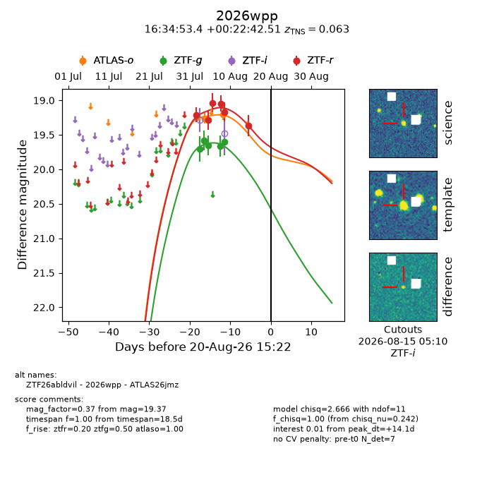
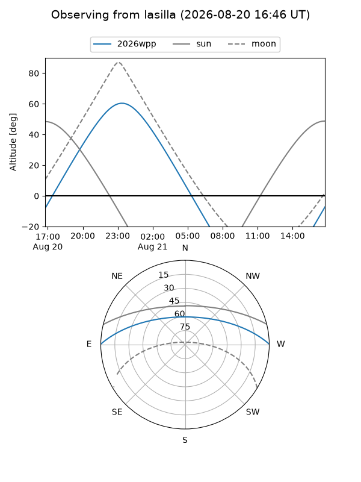
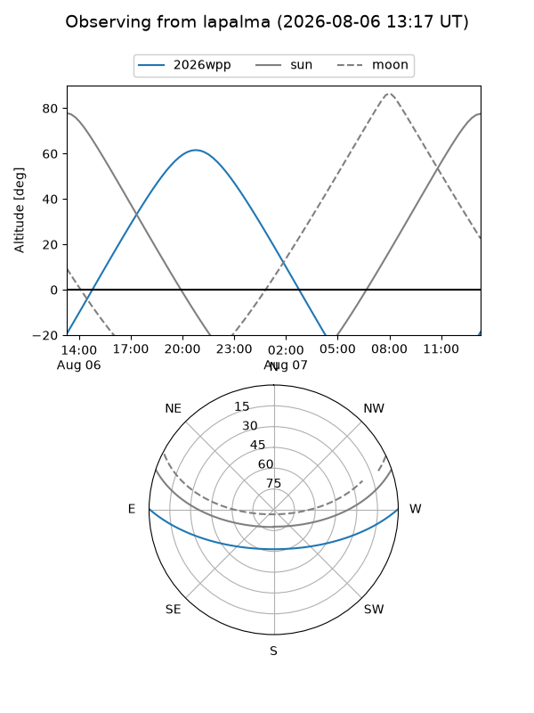
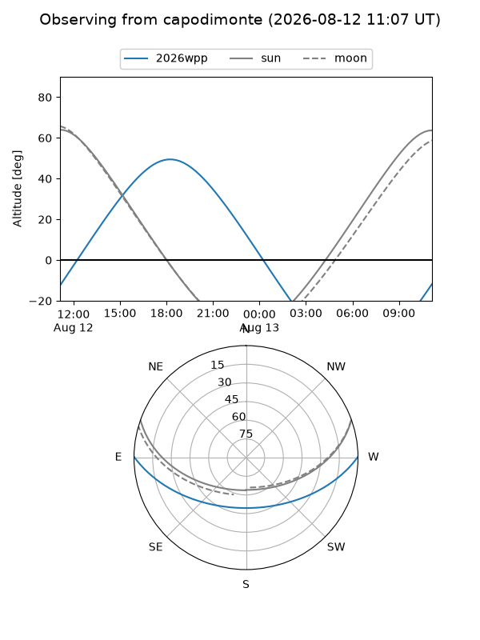
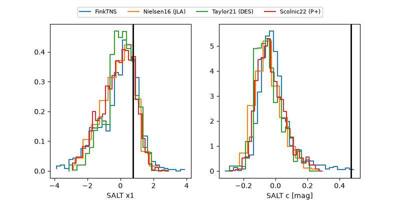

2026wpp
Target 2026wpp at 2026-08-20 15:25
Aliases and brokers:
FINK-ZTF: ztf.fink-portal.org/ZTF26abldvil
Lasair-ZTF: lasair-ztf.lsst.ac.uk/objects/ZTF26abldvil
ALeRCE-ZTF: alerce.online/object/ZTF26abldvil
YSE-PZ: ziggy.ucolick.org/yse/transient_detail/2026wpp
TNS name: wis-tns.org/object/2026wpp
Direct TNS query: direct search
alt names
ZTF26abldvil (ztf,fink_ztf)
2026wpp (tns,yse)
ATLAS26jmz (atlas)
Coordinates:
equatorial (ra, dec) = 248.7226,+0.37847
equatorial (HMS+DMS) = 16:34:53.41,+00:22:42.51
galactic (l, b) = (16.1250,+30.16142)
Flags:
TNS type: SN Ia
TNS redshift: 0.0630
peak dt: +14.1
Photometry:
last atlaso=19.20, ztfg=19.60, ztfr=19.37
2 atlaso, 5 ztfg, 6 ztfr detections
Lightcurve

Visibility



Additional plots
